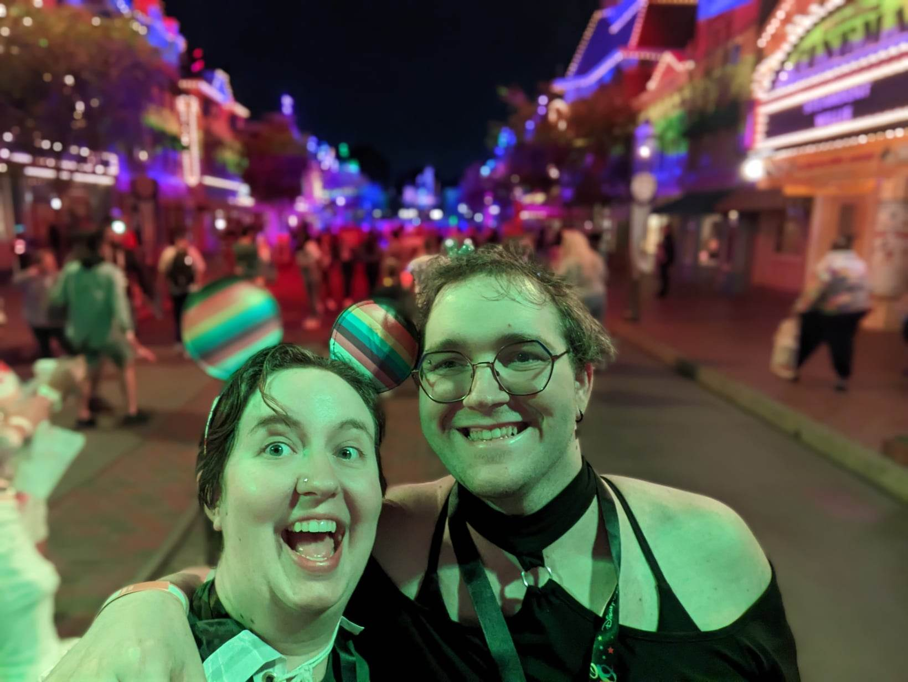
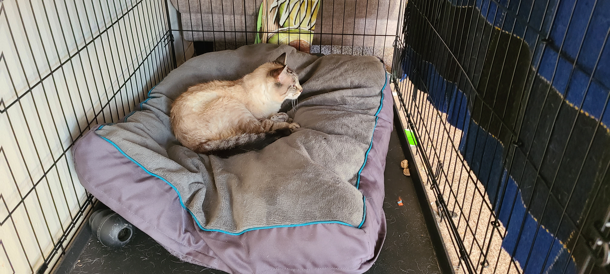
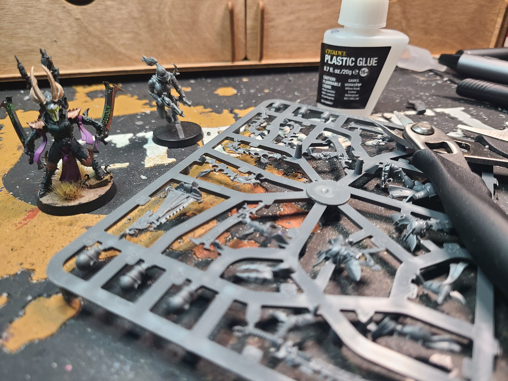

Hello! My name is Evelynn Cutrell, but I typically go by Evie. I live with my amazing spouse, our dog Thor, and our 'cat' (prounounced as gremlin) Preston
in the greater Seattle area. I am a problem-solver and technical thinker who likes knowing the how and why.
Some of my favorite hobbies include Warhammer 40,000 which is a tabletop miniatures game where you build and paint a faction from the game's lore and then play a war-style strategy game on the tabletop. I have taken first at a couple of local tournaments for the game even.
Along with Warhammer I am also an avid reader, board game enthusiast, and video game player. One of my favorite book series is called "Stormlight Archives" by Brandson Sanderson: it's a fantasy series that currently sits at four books (with a total of ten planned) and each book is over 1,200 pages. For board games I enjoy all kinds, but more-often-than-not play a strategy, resource-management, or deckbuilding game. As for video games I typically enjoy narrative-driven games or crafting sims.
Some of my favorite hobbies include Warhammer 40,000 which is a tabletop miniatures game where you build and paint a faction from the game's lore and then play a war-style strategy game on the tabletop. I have taken first at a couple of local tournaments for the game even.
Along with Warhammer I am also an avid reader, board game enthusiast, and video game player. One of my favorite book series is called "Stormlight Archives" by Brandson Sanderson: it's a fantasy series that currently sits at four books (with a total of ten planned) and each book is over 1,200 pages. For board games I enjoy all kinds, but more-often-than-not play a strategy, resource-management, or deckbuilding game. As for video games I typically enjoy narrative-driven games or crafting sims.
